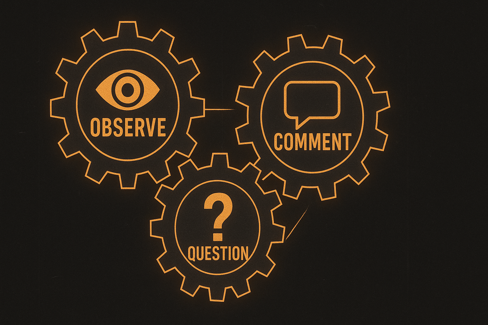
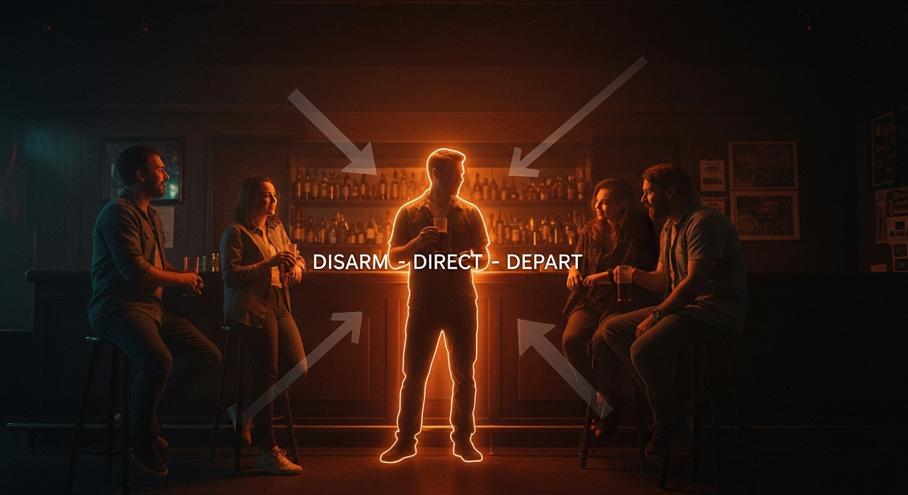

Install the OCQ System to Never Run Out of Things to Say
An IRONCLAD FOUNDATION Module
PROMISE
You will install a simple, three-step system that fuels endless conversation. You’ll eliminate awkward silences, escape interview mode, and handle both one-on-one and group dynamics with natural flow.
Your new conversation engine – always running smoothly.
THE FLAW · CONVERSATION STALL
Most conversations stall because people slip into boring interview mode (“Where are you from? What do you do?”) or launch into monologues, dominating the conversation. Both kill chemistry instantly.
The painful result of a conversation stall.
“Stalled conversations are inexperienced territory. Today you install an engine that never stalls and keeps dialogue flowing naturally.”
DOCTRINE · CONVERSATION IS PING-PONG
The goal is a balanced exchange of energy and information. The OCQ Engine automates that balance.
1
Observe: Spot something specific and genuine.
2
Comment: Give your personal take or reaction.
3
Question: Ask an open-ended question that invites a story.

The self-sustaining conversation loop.
PROTOCOL · MASTERING THE OCQ CYCLE
Coffee-Shop Example
O
“That book looks well-loved — it’s practically falling apart.”
C
“A book with battle scars always earns my respect.”
Q
“What’s the most impactful thing you’ve read in it lately?”
The Two-Breath Rule
After you speak, give space for two of her breaths. No response? Your last turn ran too long. Adjust.
PROTOCOL · GROUP DYNAMICS (D-D-D)
Groups require a specific protocol. Use this three-step system for entry and engagement:
1
Disarm: “Quick poll — whose socks are the most outrageous?”
2
Direct: “Yours are surprisingly tame; I expected more from a sock expert.”
3
Depart: “I’m grabbing a drink — join me, and we’ll debate sock philosophy.”

A simple, repeatable system for group entry.
QUICK CHECK · SPOT THE OCQ
Which option demonstrates a true OCQ sequence?
A) “Nice weather today. Do you come here often?”
B) “Cool tattoo. I’ve got three myself. My first one was …”
C) “That tattoo has stunning detail. The artist must be gifted. What’s the story behind it?”
D) “Do you like tattoos? Where are you from?”
THE DRILL · 7-DAY ENGINE TEST
Install the OCQ cycle as a reflex with this daily practice:
Day 1
Write five OCQ sequences based on your current surroundings.
Day 2
Use one OCQ in a low-stakes interaction (cashier/barista).
Day 3
Use OCQ in two separate interactions.
Day 4
Maintain a single conversation using three OCQ cycles.
Day 5
Mentally rehearse a full D-D-D group approach.
Day 6
Use the “Disarm” step in a real group scenario.
Day 7
Execute a full D-D-D sequence in a group.
Engine Installed
You now navigate social interactions with confidence and endless material. Awkward silences are history.